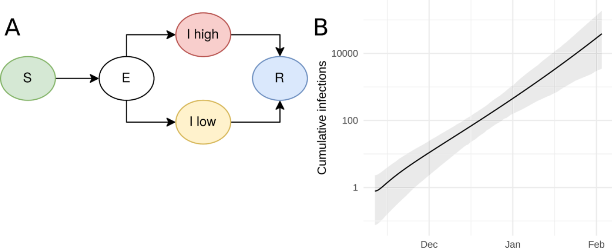
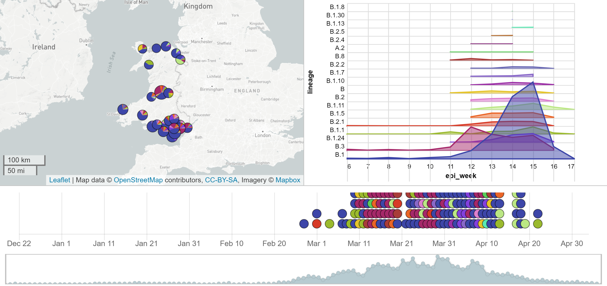
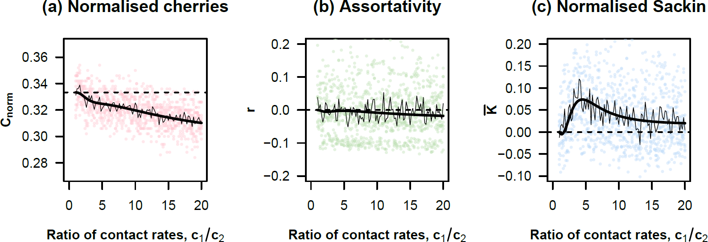

Phylodynamics of SARS-CoV-2
Simon Frost
Principal Data Scientist, Microsoft Health Futures
Professor of Pathogen Dynamics, LSHTM


Models old and new
- Old
- Not as old
- Stochastic models
- Age structured models
- Recent
- Agent-based models
- Network models
- New
Phylodynamics
- Models that integrate evolutionary models with…
- Epidemiology
- Immunology
- Ecology
- Different data streams can complement and enhance each other
- Villabona-Arenas, Hanage and Tully (2020) argue that phylogenetic data should be integrated with other sources
Sequence data
- Why include sequence data?
- Introduction of cases
- Spatial coupling
- Hidden heterogeneity
- Remarkable generation and dissemination of SARS-CoV-2 sequence data
- GISAID: collates data worldwide
- COGUK: COVID-19 Genomics UK Consortium
Increased accessibility
- Not just ability to download sequences
- Post-processed data
- Dashboards
- Nextstrain, Microreact, CoV-GLUE
Yet studies are limited
- medrXiv/biorXiv:
- ‘SEIR and COVID19’: 445 hits
- ‘phylodynamics and COVID19’: 26 hits
- Until recently, sample sizes of studies were small
- Typically stronger on the phylogenetics than on the modeling
Early dynamics (n=53)
- SEI(2)R model with (assumed) heterogeneity in infectiousness
- \(R_0=2.15\) \((1.79-2.75)\)
 Volz et al., Imperial Report 5, 2020-02-15
Weifang outbreak (n=20)

Volz et al., medrXiv, 2020-03-19
Li and Ayscue: multiple locations (n=1,113)
- Joint estimation using cases and phylogeny
- Methodology of Li, Grassly, and Fraser, assuming a branching process with time-varying parameters
- Estimated undercount of cases as well as heterogeneity in cases

Li and Ayscue, medrXiv, 2020-05-09
Australian epidemic (n=903)
- Assume two regimes of \(R\) and fitted timing and magnitude using a birth-death process

Seemann et al., medrXiv, 2020-05-16
Problems
- With few exceptions, studies that use SARS-CoV-2 sequence data are more ‘phylo’ and less ‘dynamics’
- Datasets are large and expanding rapidly
- Allows us to fit more complex models…
- Computationally expensive
Solutions?
- Long term:
- Focus on scalable inference
- Short term:
- Look at smaller e.g. subnational epidemics
- Generate predicted phylogenies from existing models
1. Smaller epidemics
- Analyses of datasets in the low 1000s is possible with current frameworks
Microreact: Scotland data

Microreact: Wales data

2. Generating predicted phylogenies
- Algorithms and tools exist today to take epidemiological models and output phylogenies
- ODE models: phydynR (Volz)
- Gillespie-type models: MASTER (Vaughan)
- Agent-based models:
- VirusTreeSimulator (Hall)
- treesampler (Kosakovsky Pond)
- A requirement is that we need to understand the link between state changes in an epidemiological model and the phylogeny
An analogy: deterministic vs. stochastic models
- Consider a birth-death process with birth rate \(b\) and death rate \(d\)
- In a deterministic ODE model, we just have to consider the difference in rates \(b-d\)
- In a stochastic model, we have to consider both processes
Phylodynamic vs. non-phylodynamic models
- By defining models in terms of their components, we can easily extend epidemiological models to generate phylogenies
- Transmission results in lineages splitting
- Processes such as movement can result in a change in lineage state
- With more work, it is possible to extend them to generate summary statistics of phylogenies
- Clustering, asymmetry etc.
- Frost and Volz (2010,2013)
Core groups and phylogeny
 Frost and Volz (2013)
Deterministic models with phydynR
births <- c('parms$beta*S*I')
deaths <- c('(parms$mu+parms$gamma)*I')
names(births) <- names(deaths) <- c("I")
nonDemeDynamics <- c('parms$mu*(S+I+R)-parms$beta*S*I-parms$mu*S',
'parms$gamma*I-parms$mu*R')
names(nonDemeDynamics) <- c("S","R")
Stochastic models with MASTER
<reaction spec='Reaction' reactionName="Infection" rate="0.005">
S + I -> 2I
</reaction>
<lineageSeed spec='Individual' population='@I'/>
Agent based models
- Perhaps the simplest to deal with
- Just need to keep track of
- who infected whom (and when)
- when infected cases die/recover
Ego Alter Time
1 2 1.0
2 3 1.5
1 -1 2.1
Phylogenies or lineages?
- SARS-CoV-2 is not that diverse
- Rambaut et al. have defined a number of lineages
- Do we need the full phylogeny? Or do lineages suffice?
UK phylogeny

New models?
- Rather than repurpose existing models, are there new ones we can explore?
- How can we represent genealogies within an epidemiological model?
- In population genetics, Fleming-Viot processes have been developed that have considered e.g. infinite allele models, infinite sites models etc..
Conclusions
- The densely sampled COVID19 epidemic in the UK provides challenges and opportunities:
- Methodological development
- Understanding contact structure
- Many existing models that can be retrofitted to generate pathogen phylogenies
- Aid to model comparison, as many models may fit the case data equally well
Thanks!